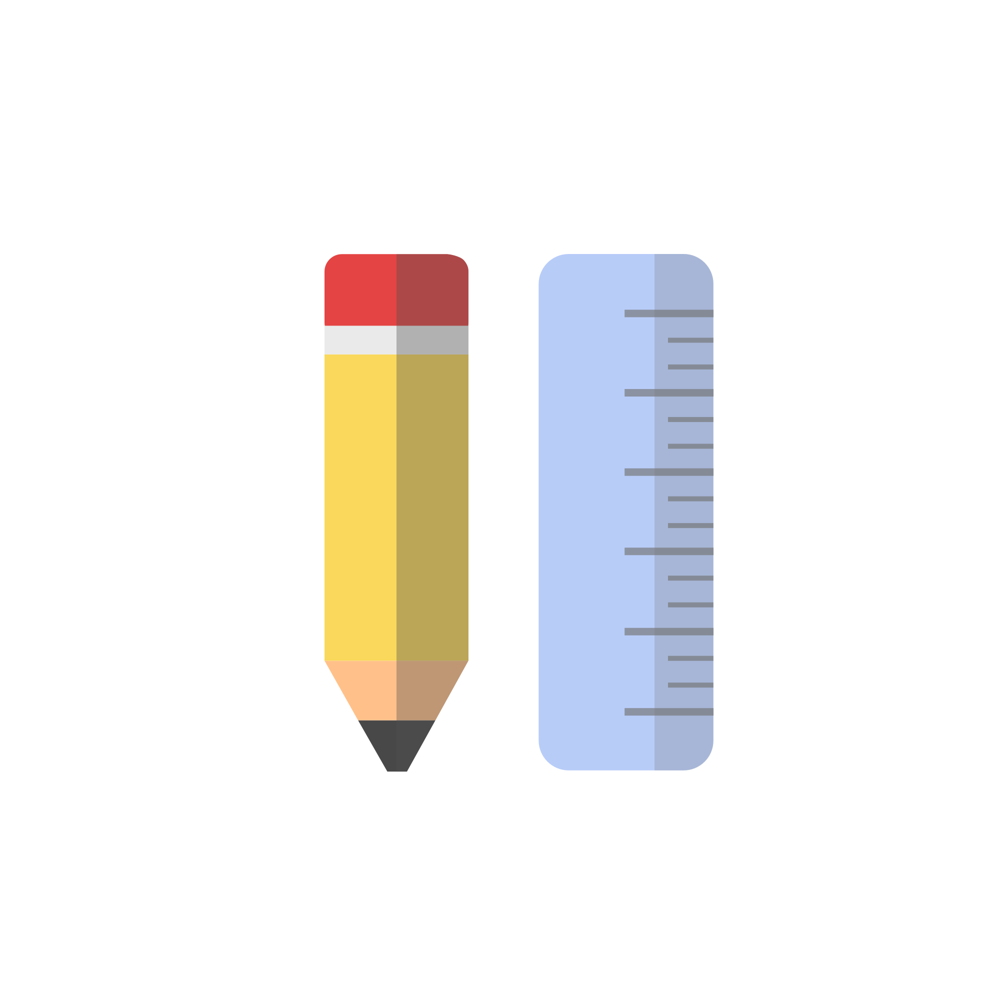

Day 4 - Incomplete School Essentials
Only the 4th day and I was already stuck for ideas. There were plenty of floating imaginations I wanted to do, but I just didn't know which one to do first.
I decided on a simple design and used pastel-like colours. I was aiming for only designing the pencil at first, however, when I was done, it didn't seem complete (maybe because it was a bit on the easier end). The planning of the placement of the two objects wasn't that satisfying. At first, I wanted to put them as an X, but because it'd hide a lot of the features of the object hiding in the back, I decided to put them side by side for a clean look.
I wouldn't say I'm unsatisfied with this design, but it didn't stick out enough for me. Hopefully I'll be able to tackle this in a better and creative way tomorrow.